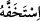

54. Firavun kavmini aldattı; onlar da kendisine boyun eğdiler. Onlar yoldan çıkmış
bir kavimdir.
“Firavun kavmini aldattı”, kendisine itâat etmeleri konusunda böyle yaldızlı işler ve
bir takım cambazlıklar sergilemeye durumu müsâid görüp onları önemsemedi; “onlar
da kendisine boyun eğdiler” son derece câhil ve sapık oldukları için böyle azgın birine
derhal itâat ettiler. Bütün kalpleriyle Mûsâ (a.s)’a ittibâ etmekten uzak durdular. Çünkü
“onlar yoldan çıkmış bir kavimdir.”
“İstihfâf”; hafîfe almak, hakîr görmek, hafife almayı istemek gibi mânâlara gelir. Yani
Firavun psikolojik, sözlü ve fiilî baskılarla onları yıldırma politikası izledi. Kendisine
itâat etmeleri konusunda onlardan akıl dışı hafif bir davranış istedi. Tabiî ki burada
istenen şey, bir takım yaldızlı, şeytânî, bâtıl işleri yapmaları konusunda onların
akıllarının hafif ve kıt olmasıdır. Böylece aslında akl-ı selîm sahiplerinin kabul
etmeyeceği konularda bu aklı kıt insanlar; yani Kıptiler kendisine itâat etmiş olacaktır.
Yoksa emrine itâat konusunda bedenlerinin hafif olması; atik ve çevik olmaları değildir.
Yahut onların akıl ve anlayışlarını hafife almış, böyle yaldızlı, bâtıl işlere aldanmaları
konusunda onları hafif bulmuştur.
Râgıb şöyle demiştir: Onları kendisiyle beraber yürümeye sevketmiş yahut onları
niyet, maksad ve bedenleri konusunda hafif bulmuştur.
Kamus’ta şöyle denilmektedir: “
/istehaffehu; onu hafife aldı, “
/isteskalehu”
onu ağır kabul etti, ifâdesinin tersidir. Yine “görüşünde onu hafife aldı” demek, onu
cehâlet ve hafifliğe sevketti, üzerinde bulunduğu doğrudan onu kaydırdı, demektir.
Kâşifî şöyle demiştir: Firavun bu hîleyle kendi kavmini aldattı, yani bu aldatma
onlara tesir etti/etkiledi.
“Onlar yoldan çıkmış bir kavimdiler.” Doğrusu onlar, Allah’ın kulluk dâiresinden ve
emrinden çıkıp Firavun’a itâat eden bir grup idiler. Akıl yolundan sapmış, geçici makam
ve mala itimad etmiştiler. Mûsâ (a.s)’a hakâret gözüyle bakıp bilememişlerdi ki;
“Firavun, ebedi azap ve gösteriş; Mûsâ, kelîmullah, bir değnek ve bir çoban.”
et-Te’vilâtü’n-Necmiyye’de belirtildiğine göre âyet şuna işâret etmektedir: Her kim
bir topluluğa hükümrân olup onları hafîfe alarak üzerlerinde baskı kurar, onlar da ondan
korkarak itâat ederler, neticede şâyet onun baskı ve zulmünden emin olurlarsa tabiî ki
ona muhâlefet ederler. Bu durum onların cihadlarını, riyâzatlarını ve tabiatlarına
muhâlefet etmelerini artırır. Şâyet nefs-i emmâre bir taraftan kendi topluluğu olan kalp
ve ruha ve bunların sıfatlarına hükümran olur, diğer taraftan şerîata muhâlefet, nefs ü
hevâ ve tabiata muvâfakat konusunda onları hafife alır, onlar üzerine baskı kurarsa artık
kalp ve ruh nefisten korkar, onun kötü ahlâkıyla ahlâklanıp ona itâat eder.